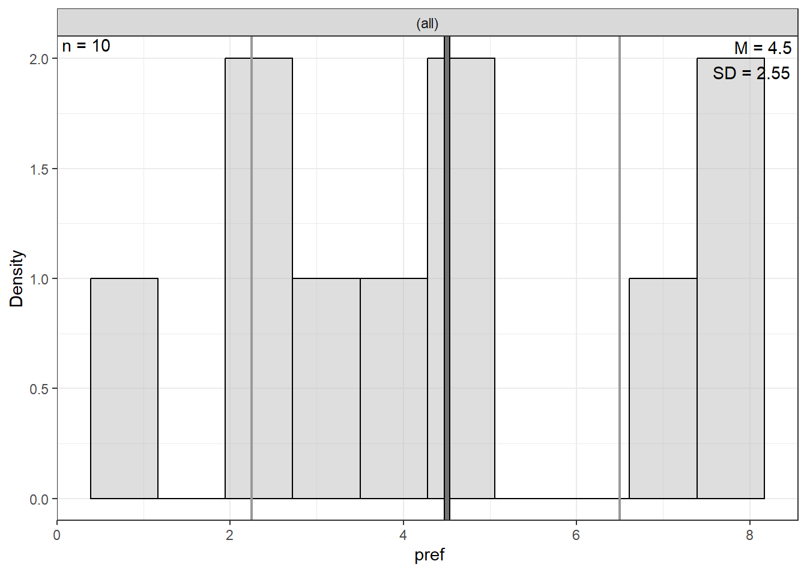
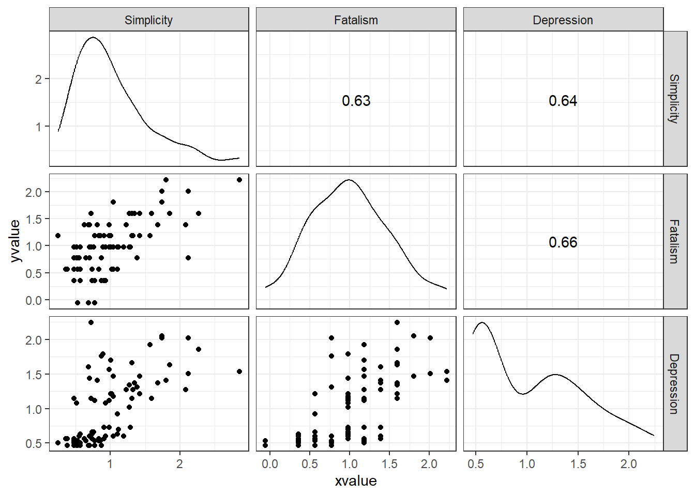
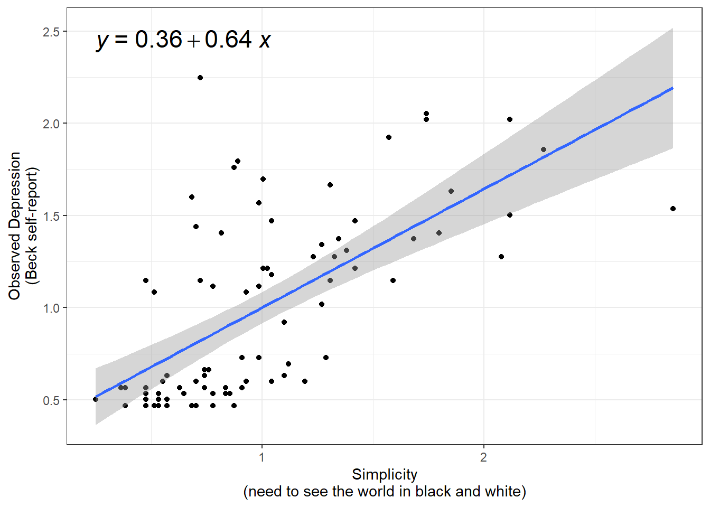
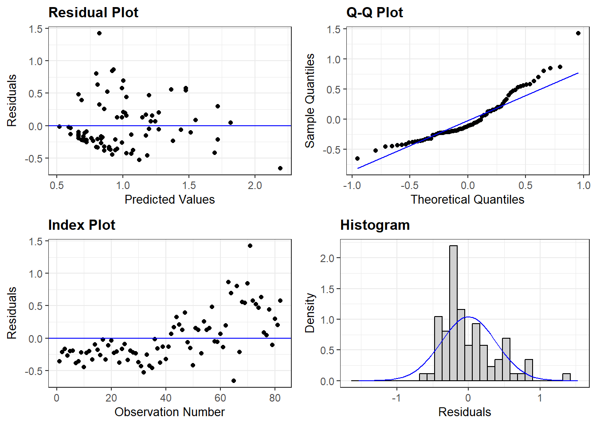

5 Ex: Ginzberg Depression
References:
http://www.philender.com/courses/intro/notes/cor1.html https://lytarhan.rbind.io/post/variancepartitioning/ https://stats.stackexchange.com/questions/552451/which-r-functions-are-correct-for-estimating-partial-eta-squared-for-effects-in
#library(remotes)
#remotes::install_github("sarbearschwartz/apaSupp")
library(carData)
library(tidyverse)
library(broom)
library(flextable)
library(apaSupp)
library(modelsummary)
library(ppcor)
library(jtools)
library(olsrr)
library(DescTools)
library(effectsize)
library(ggpubr)
library(ggResidpanel)5.1 Purpose
5.1.1 Research Question
Is there a relationship between depression and beliefs (simplicity and fatalism)?
5.1.2 Data Description
The data for psychiatric patients (n = 84) hospitalized for depression is provided by the carData package.
Source: Personal communication from Georges Monette, Department of Mathematics and Statistics, York University, with the permission of the original investigator.
References: Fox, J. (2016) Applied Regression Analysis and Generalized Linear Models, Third Edition. Sage.
Variables
simplicityMeasures subject’s need to see the world in black and whitefatalismFatalism scaledepressionBeck self-report depression scale
5.2 Explore the data
Rows: 82
Columns: 6
$ simplicity <dbl> 0.92983, 0.91097, 0.53366, 0.74118, 0.53366, 0.62799, 0.778…
$ fatalism <dbl> 0.35589, 1.18439, -0.05837, 0.35589, 0.77014, 1.39152, 0.35…
$ depression <dbl> 0.59870, 0.72787, 0.53411, 0.56641, 0.50182, 0.56641, 0.469…
$ adjsimp <dbl> 0.75934, 0.72717, 0.62176, 0.83522, 0.47697, 0.40664, 0.845…
$ adjfatal <dbl> 0.10673, 0.99915, 0.03811, 0.42218, 0.81423, 1.23261, 0.297…
$ adjdep <dbl> 0.41865, 0.51688, 0.70699, 0.65639, 0.53518, 0.34042, 0.421…# A tibble: 82 × 6
simplicity fatalism depression adjsimp adjfatal adjdep
<dbl> <dbl> <dbl> <dbl> <dbl> <dbl>
1 0.930 0.356 0.599 0.759 0.107 0.419
2 0.911 1.18 0.728 0.727 0.999 0.517
3 0.534 -0.0584 0.534 0.622 0.0381 0.707
4 0.741 0.356 0.566 0.835 0.422 0.656
5 0.534 0.770 0.502 0.477 0.814 0.535
6 0.628 1.39 0.566 0.407 1.23 0.340
7 0.779 0.356 0.470 0.846 0.298 0.422
8 0.836 0.563 0.534 1.50 1.20 1.08
9 0.515 0.770 0.470 0.311 0.657 0.363
10 0.873 0.356 0.470 1.41 0.854 0.917
# ℹ 72 more rows5.2.1 Descriptive Statistics
df_ginz %>%
dplyr::select("Simplicity" = simplicity,
"Fatalism" = fatalism,
"Depression" = depression) %>%
apaSupp::tab_desc(caption = "Description of Psychiatric Patients Hospitalized for Depression")Measure | NA | M | SD | min | Q1 | Mdn | Q3 | max |
|---|---|---|---|---|---|---|---|---|
Simplicity | 0 | 1.00 | 0.50 | 0.25 | 0.66 | 0.88 | 1.27 | 2.85 |
Fatalism | 0 | 1.00 | 0.50 | -0.06 | 0.56 | 0.98 | 1.39 | 2.22 |
Depression | 0 | 1.00 | 0.50 | 0.47 | 0.57 | 0.82 | 1.37 | 2.25 |
Note. NA = not available or missing. Mdn = median. Q1 = 25th percentile, Q3 = 75th percentile. N = 82. | ||||||||
5.2.2 Correlations
df_ginz %>%
dplyr::select("Simplicity" = simplicity,
"Fatalism" = fatalism,
"Depression" = depression) %>%
apaSupp::tab_cor(caption = "Correlations")Variables | r | p | ||
|---|---|---|---|---|
Simplicity | Fatalism | 0.630 | < .001 | *** |
Simplicity | Depression | 0.640 | < .001 | *** |
Fatalism | Depression | 0.660 | < .001 | *** |
Note. r = Pearson's Product-Moment correlation coefficient. N = 82. | ||||
* p < .05. ** p < .01. *** p < .001. | ||||
df_ginz %>%
dplyr::select("Simplicity" = simplicity,
"Fatalism" = fatalism,
"Depression" = depression) %>%
cor(method = "pearson") %>%
corrplot::corrplot.mixed()
5.2.3 Plots
Always plot your data first!


df_ginz %>%
dplyr::select("Simplicity" = simplicity,
"Fatalism" = fatalism,
"Depression" = depression) %>%
data.frame %>%
ggscatmat() +
theme_bw()
df_ginz %>%
ggplot(aes(x = simplicity,
y = depression)) +
geom_point() +
theme_bw() +
geom_smooth(method = "lm",
formula = y ~ x) +
ggpubr::stat_regline_equation(label.x = 0.25,
label.y = 2.45,
size = 6) +
labs(x = "Simplicity\n(need to see the world in black and white)",
y = "Observed Depression\n(Beck self-report)")
df_ginz %>%
ggplot(aes(x = fatalism,
y = depression)) +
geom_point() +
theme_bw() +
geom_smooth(method = "lm",
formula = y ~ x) +
ggpubr::stat_regline_equation(label.x = 0,
label.y = 2.45,
size = 6) +
labs(x = "Fatalism\n(belief that all events are predetermined and therefore inevitable)",
y = "Observed Depression\n(Beck self-report)")
5.3 Linear Regression for Depression
5.3.1 Model with only Simplicity
Model Summary
--------------------------------------------------------------
R 0.643 RMSE 0.380
R-Squared 0.414 MSE 0.145
Adj. R-Squared 0.406 Coef. Var 38.521
Pred R-Squared 0.381 AIC 80.229
MAE 0.303 SBC 87.449
--------------------------------------------------------------
RMSE: Root Mean Square Error
MSE: Mean Square Error
MAE: Mean Absolute Error
AIC: Akaike Information Criteria
SBC: Schwarz Bayesian Criteria
ANOVA
-------------------------------------------------------------------
Sum of
Squares DF Mean Square F Sig.
-------------------------------------------------------------------
Regression 8.379 1 8.379 56.47 0.0000
Residual 11.871 80 0.148
Total 20.250 81
-------------------------------------------------------------------
Parameter Estimates
------------------------------------------------------------------------------------
model Beta Std. Error Std. Beta t Sig lower upper
------------------------------------------------------------------------------------
(Intercept) 0.357 0.096 3.732 0.000 0.167 0.547
simplicity 0.643 0.086 0.643 7.515 0.000 0.473 0.814
------------------------------------------------------------------------------------5.3.2 Model with only Fatalism
Model Summary
--------------------------------------------------------------
R 0.657 RMSE 0.374
R-Squared 0.432 MSE 0.140
Adj. R-Squared 0.425 Coef. Var 37.913
Pred R-Squared 0.408 AIC 77.623
MAE 0.293 SBC 84.843
--------------------------------------------------------------
RMSE: Root Mean Square Error
MSE: Mean Square Error
MAE: Mean Absolute Error
AIC: Akaike Information Criteria
SBC: Schwarz Bayesian Criteria
ANOVA
-------------------------------------------------------------------
Sum of
Squares DF Mean Square F Sig.
-------------------------------------------------------------------
Regression 8.751 1 8.751 60.878 0.0000
Residual 11.499 80 0.144
Total 20.250 81
-------------------------------------------------------------------
Parameter Estimates
------------------------------------------------------------------------------------
model Beta Std. Error Std. Beta t Sig lower upper
------------------------------------------------------------------------------------
(Intercept) 0.343 0.094 3.642 0.000 0.155 0.530
fatalism 0.657 0.084 0.657 7.802 0.000 0.490 0.825
------------------------------------------------------------------------------------5.3.3 Model with only Both Predictors
Model Summary
--------------------------------------------------------------
R 0.720 RMSE 0.345
R-Squared 0.519 MSE 0.119
Adj. R-Squared 0.507 Coef. Var 35.122
Pred R-Squared 0.468 AIC 66.048
MAE 0.269 SBC 75.674
--------------------------------------------------------------
RMSE: Root Mean Square Error
MSE: Mean Square Error
MAE: Mean Absolute Error
AIC: Akaike Information Criteria
SBC: Schwarz Bayesian Criteria
ANOVA
-------------------------------------------------------------------
Sum of
Squares DF Mean Square F Sig.
-------------------------------------------------------------------
Regression 10.505 2 5.253 42.582 0.0000
Residual 9.745 79 0.123
Total 20.250 81
-------------------------------------------------------------------
Parameter Estimates
------------------------------------------------------------------------------------
model Beta Std. Error Std. Beta t Sig lower upper
------------------------------------------------------------------------------------
(Intercept) 0.203 0.095 2.140 0.035 0.014 0.391
simplicity 0.380 0.101 0.380 3.771 0.000 0.179 0.580
fatalism 0.418 0.101 0.418 4.151 0.000 0.217 0.618
------------------------------------------------------------------------------------5.4 Residual Diagnostics
5.4.1 Model with only Simplicity
OK: Simulated residuals appear as uniformly distributed (p = 0.094).

5.5 Effect Size, variance explained
5.5.1 Variance Partitioning
[1] 0.2499999[1] 0.1465519[1] 0.141967[1] 0.1203068


5.5.2 Semipartial Correlation
Therefor…
- Unique from Simplicity = .519 - .432 = .087
- Unique from Fatalism = .519 - .414 = .105
- Sharded from Both = .432 + .414 - .519 = .327
# A tibble: 2 × 5
Term r2_semipartial CI CI_low CI_high
<chr> <dbl> <dbl> <dbl> <dbl>
1 simplicity 0.0866 0.95 0.0128 1
2 fatalism 0.105 0.95 0.0239 1 eta.sq eta.sq.part
simplicity 0.08664075 0.152572
fatalism 0.10498045 0.1790845.5.3 Eta-squared
Type I is sequential and terms are “added” to the model in order, first the main effects, then the interactions; the type I sum of squares are SS(A), SS(B|A)
Type II adjust the contribution of a predictor for other main effects (but not its interactions, if any): SS(A|B), SS(B|A)
Type III attributes to each term (main effect or interaction) its unique contribution. So the sum of squares due to A excludes the effect of the interaction between A and B: SS(A|B,A:B), SS(B|A,A:B), SS(A:B|A,B).
# A tibble: 2 × 5
Parameter Eta2 CI CI_low CI_high
<chr> <dbl> <dbl> <dbl> <dbl>
1 simplicity 0.414 0.95 0.279 1
2 fatalism 0.105 0.95 0.0223 1simplicity fatalism
0.4137922 0.1049805 eta.sq eta.sq.part
simplicity 0.4137922 0.4623275
fatalism 0.1049805 0.1790840